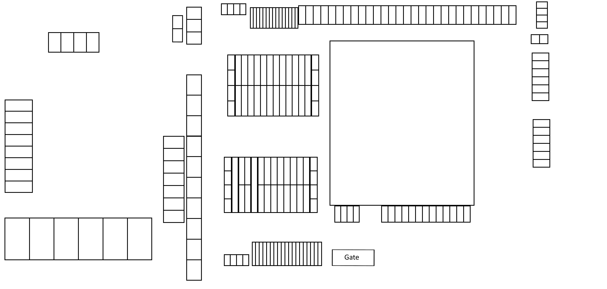

Client project Operations software
Container Yard Operations Platform
I replaced paper-and-whiteboard tracking with a shared, searchable system for managing container operations across three yards.
- Role
- Independent developer & IT support
- Period
- 2026 - Present
- Scale
- 3 yards · 450+ units · 6 staff
- Tools
- JavaScript · Supabase

The starting point
The operation was being tracked with pen-and-paper records and whiteboards. The owner wanted a clearer way to see what was happening across the yards and to find container and customer information without searching through separate records.
The idea for the map came from a casino floor-management system I had used in another role. It represented machines as boxes in their physical positions. The owner saw that visual approach and asked whether we could adapt it to container yards.
I carried over the idea of a map people could scan at a glance, then adapted it to the business: units are positioned on their yard layout and colour-coded by status, with a searchable list for staff who prefer to look something up directly.
Designing it together
I worked directly with the owner to understand the existing process and what the team needed to record. We held weekly follow-ups and meetings throughout the work. I showed progress, gathered feedback and adjusted the map, searchable list and data-entry flow as the requirements became clearer.
This gave the client regular opportunities to check that the product felt right for their operation. It also helped me resolve practical details early, instead of treating the first version as a finished specification.
Building the experience
I built the frontend with HTML, CSS and JavaScript. Each yard has its own background plan and container-position data. I render the container positions as interactive SVG shapes over the map, keeping each unit selectable while preserving the real layout as the view scales.
- Map and list: staff can select a container on the map or find it through the searchable list.
- Status at a glance: available, rented and bad-debt units have distinct colours and live totals.
- Search and filters: narrow the list by container or customer details, status and size.
- Container editor: update the display name, size, status, customer, phone or reference, and notes.
- Accessible controls: map units can be focused and selected with a keyboard as well as a pointer.
The map is backed by structured records rather than being the data store itself. This lets the visual layout and searchable list present the same underlying container information in two useful ways.
Data and live updates
I used Supabase for the application’s relational data and authenticated access. The model separates yards, containers, customers, rentals and staff profiles, linking each yard to its units and each rental to its container and customer. It supports container size and status, customer contact details, rental status and notes, and rental fields such as monthly rate and deposit.
When a yard loads, the app inserts any missing container records using the yard and internal container code as the conflict key. Existing records are left in place, which makes this setup repeatable without creating duplicate units.
Changes to containers, rentals and customers are received through Supabase Realtime. I debounce those events before refreshing the map, list and counts, and avoid rebuilding the editor while a staff member is actively editing it.
Access and accountability
Staff sign in with Supabase Auth. The application checks that a signed-in user has an active staff profile, and only shows the administration area to an administrator.
I built the privileged staff-management operations as a Supabase Edge Function using TypeScript and Deno. It verifies the caller’s session and administrator profile before handling invitations, role changes, account activation or deletion. The admin interface also supports password-reset requests through Supabase Auth. The function prevents administrators from changing their own access through those actions and protects the last active administrator account.
Container and rental records store staff references and timestamps for creation and updates. The interface uses those records to show who last changed a unit and when; this is operational accountability metadata, not an immutable audit log.
Delivery and what changed
I took the work from requirements gathering through implementation, testing, deployment and handover. After launch, I explained the system to staff and continued supporting the application and the business’s wider technology needs.
The result is a shared platform for six staff to manage more than 450 container units across three yards, replacing the previous paper-and-whiteboard approach. I have not assigned a time-saving or error-reduction figure because we did not measure one.
This project taught me to keep the people using a system involved throughout delivery. Weekly conversations shaped the product just as much as the code: they helped turn an initial map idea into a practical tool for the work happening on site.